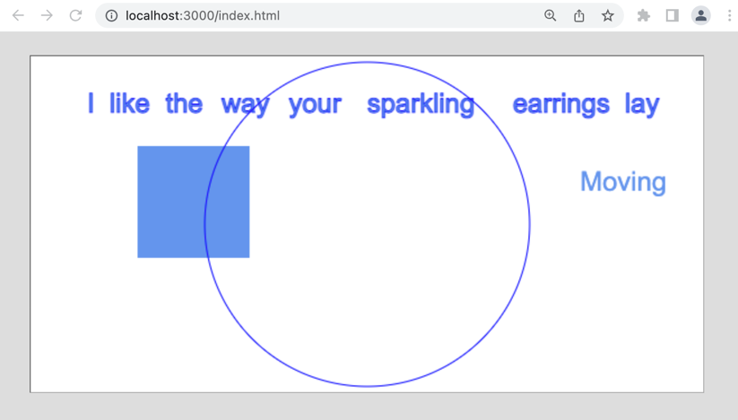
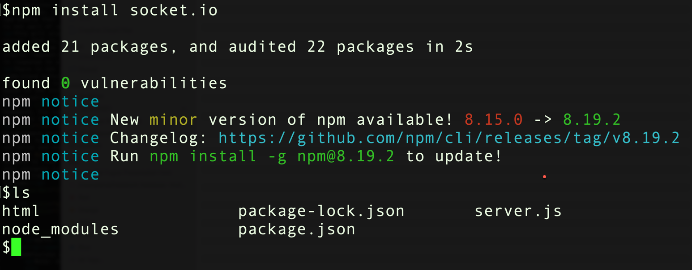

COMP 2406 - Winter 2023 Tutorial 5
Real-Time Collaboration with Web Sockets
© L.D. Nel 2023
Revisions will be noted here
Rev 1: Added some website links that Sean has suggested might be helpful for this tutorial and assignment 3.
Description:
There is not a lot of code to write for this tutorial but there is quite a lot to understand before you can do so. Start by watching the accompanying lecture on Real-Time collaboration with WebSockets. Study the demo code carefully until you are thoroughly familiar with it before you start your refactoring. The answer code you write will be based on the socket-based chat servers presented in the course notes: "13 Real-Time Collaboration with Web Sockets" and related video presentation.
This will also be our first example of asynchronous communcation between client server. That is, the server can send a message to the client without it being in response to request from that client. All the previous tutorials and assignments have used the simpler request-response model where the server can only "talk" to the clients in response to a request from the client.
The purpose of this tutorial is to get you working using npm's socket.io and web sockets to implement a real-time collaborative application. This introduces the use-case where the server can send data to the client that is not in direct response to a request from that client. This enables real-time collaboration among clients.
The demo code provided for you implements the collaborative app based on polling (each client keeps asking the server over and over and over for updated information.) Polling is easy to implement but expensive (lots of network traffic) and not very practical. Here we want to refactor the code to use web sockets instead. Refactoring means to change the internal structure of code without changing what it does. In particular, we will use the socket.io npm module that is very popular for this purpose. This will be our first npm module that is not part of node.js itself.
Here are some websites that Sean has suggested might be helpful for tutorial 5 and assignment 3 https://socket.io/docs/v4/emit-cheatsheet/ https://socket.io/docs/ https://socket.io/get-started/chat/ https://developer.mozilla.org/en-US/docs/Web/JavaScript/Reference/Global_Objects/Map
Important: tutorials are meant to be started and submitted as homework. You can come and get help each week at the your registered tutorial session but it's best to get started before the session.
Tutorial Grading: To get credit for weekly tutorials you need to submit to brightspace your code and a ReadMe.txt file with at least your name, student number and the link to your YouTube screen capture demonstration video. The video should have sound narration and demonstrate that you have met the tutorial requirements. (Make sure your video is "unlisted" and not "private" on YouTube - otherwise we won't be able to view it and it will be counted as missing. Submit a single .zip file with all your contents to Brightspace. Brightspace should allow you to resubmit your file up until the due time and will only keep the most recent submission. Grade is 0,1, or 2 as follows:
| Mark | Tutorial Grading |
|---|---|
0marks |
No submission or incomplete submission. Submissions without accompanying video get a mark of 0. Note: mark is 0 if any of the following are true:
|
1mark |
Some, but not enough, requirements met or demonstrated. Note: mark is only 1 if any of the following are true:
|
2marks |
All requirements met and demonstrated in accompanying video for required problems. Does not include problems labelled as "Optional" |
Preliminary:
Open the the demo_code folder and run the server found there. It has an accompanying html folder from which it will serve the client-side html and javascript files. When the browser requests http://localhost:3000/index.html you should see a browser application that looks similar, but not identical, to that of previous tutorials.

To test the app you need to open several browser windows to the same location. Open two or three browser windows to this location and notice the following.
You can drag the words around with the mouse on any given client but that will not be part of this exercise.
You can use the arrow keys to move the blue box around. When you do it also moves in all the other browser clients. This happens because all the clients are continously asking the the server where the blue box is. This code is using polling and it's not a good solution for real-time collaboration.
Locate the function pollingTimerHandler() in the client-side javascript. Figure out how it works then proceed with the problem exercises.
WARNING: for debug purposes there might be console output statements in the polling handler and other places that spew out too much information to the console. If that is getting in your way comment out those statements.
In the course notes there is an example chat server implemented with web sockets using the npm socket.io module. You should use that code as a model and refactor this polling-based application to use socket.io instead.
Problem 1)
In order to implement a solution using socket.io we need to install the npm socket.io module. Open a terminal to the same directory as your server.js code and execute:
npm install socket.io
A node_modules directory will be created as a result. This is our first example of installing a module that is not built into node.js itself. (During installation things will seem to pause but just wait it out until it finishes. There might be some warnings as well which we should be able to ignore. Finally a package.json and package-lock.json will likely be created.

IMPORTANT: pay attention to the marking rubric. In this and any other tutorials that use npm modules you MUST NOT submit the node_modules directory with your code. However you MUST submit the package.json and package-lock.json files. Tutorials will get a mark of 0 that do not comply with this requirement.
[By the way. If you change the folder name where your static files are stored you will need to delete the node_modules directory and re-install the socket.io module.]
Problem 2)
Modify server.js organization to resemble that of the socket.io based chat application in the notes (03 Chat Application with Socket.io in the notes on Real-Time Collaboration) . Here we are just setting the server up to make it easier to use socket.io but it won't be using the sockets yet. The code might look something like this. Notice we've made the http server callback a separate handler function which is passed into the .createServer(handler)function call:
const app = require('http').createServer(handler)
const io = require('socket.io')(app) //wrap server app in socket io capability
const fs = require("fs") //need to read static files
const url = require("url") //to parse url strings
const PORT = process.env.PORT || 3000
app.listen(PORT) //start server listening on PORT
//...
function handler(request, response) {
//...
}
Launch the server and verify that the application still works as before. It will still be using polling but at least it's set up to incorporate sockets more easily.
Problem 3)
Now for the main part. Implement the server-side socket code to expect the blue box data to arrive at the socket and to broadcast that data to everyone who is connected.
io.on('connection', function(socket){
socket.on('blueBoxData', function(data){
console.log('RECEIVED BOX DATA: ' + data)
//to broadcast message to everyone including sender:
io.emit('blueBoxData', data) //broadcast to everyone including sender
})
})
At this point you can remove all the handling of the box data in the handler() function as it won't be needed anymore.
Add the script to index.html that requests the client-side socket.io.js javascript:
<script src="/socket.io/socket.io.js"></script>
Add the javascript in canvaWithTimer.js to create the client-side socket:
//connect to server and retain the socket
//connect to the same host that served the html document
let socket = io('http://' + window.document.location.host)
socket.on('blueBoxData', function(data) {
console.log("data: " + data)
console.log("typeof: " + typeof data)
let locationData = JSON.parse(data)
movingBox.x = locationData.x
movingBox.y = locationData.y
drawCanvas()
})
Finally modify everwhere the client-side handlers where the client uses a POST message to send the blue box data to the server to use the socket instead. For example replace like the following:
//update the server with a new location of the moving box
let xhttp = new XMLHttpRequest()
xhttp.onreadystatechange = function() {
if (this.readyState == 4 && this.status == 200) {
console.log("data: " + this.responseText)
console.log("typeof: " + typeof this.responseText)
//we are expecting the response text to be a JSON string
}
}
xhttp.open("POST", "positionData") //API: .open(METHOD, URL)
xhttp.send(jsonString) //API: .send(BODY)
with
//update the server with a new location of the moving box
socket.emit('blueBoxData', jsonString)
[OPTIONAL: If you want change the XMLHttpRequest approach to the fetch() API based approached done in tutorial 3]
When making these changes be mindful of whether JSON or just plain text is being passed between the client and server. It should be JSON strings representing the blue box location. (If you are unsure print the data object to the console to see what it is.)
When you have completed all these changes you should be able to move the blue box in one browser with the arrow keys and watch on another browser as the box moves along in a synchronized fashion.
Congratulations this is a major refactor. The code is no longer using the inefficient polling strategy. The animation probably looks better, but more important you, would now be able to handle much more complex real-time collaboration that would not be possible with polling.
IMPORTANT: since this is a refactor exercise the code does not appear to behave much differently. So make sure to show us in our demonstration video that it is now socket.io code and no longer based on the polling timer.
When you have completed these problems create a screen capture video, with sound, that demonstrates you've completed problem 3 (it depends on the other problems). Submit your code and readme.txt file (containing your YouTube link) to brightpace.